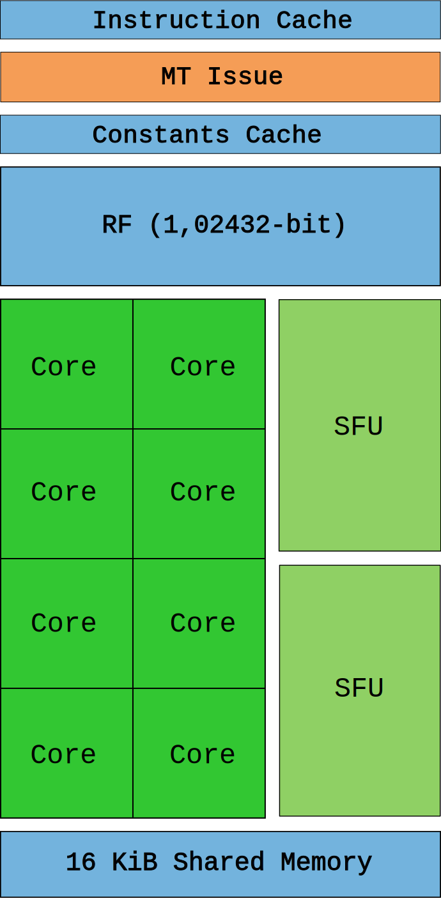

I spent last week-end getting accustomed to CUDA and SIMT programming. It was a prolific time ending up with a Business Card Raytracer running close to 700x faster[1], from 101s to 150ms.
This pleasant experience was a good pretext to spend more time on the topic and learn about the evolution of Nvidia architecture. Thanks to the abundant documentation published over the years by the green team, I was able to go back in time and fast forward though the fascinating evolution of their stream multiprocessors.
Visited in this article:
Year Arch Series Die Process Enthusiast Card =========================================================================== 2006 Tesla GeForce 8 G80 90 nm 8800 GTX 2010 Fermi GeForce 400 GF100 40 nm GTX 480 2012 Kepler GeForce 600 GK104 28 nm GTX 680 2014 Maxwell GeForce 900 GM204 28 nm GTX 980 Ti 2016 Pascal GeForce 10 GP102 16 nm GTX 1080 Ti 2018 Turing GeForce 20 TU102 12 nm RTX 2080 Ti
Up to 2006, NVidia's GPU design was correlated to the logical stages in the rendering API[2]. The GeForce 7900 GTX, powered by a G71 die is made of three sections dedicated to vertex processing (8 units), fragment generation (24 units), and fragment merging (16 units).
The G71. Notice the Z-Cull optimization discarding fragment that would fail the Z test.
This correlation forced designers to guess the location of bottlenecks in order to properly balance each layers. With the emergence of yet another stage in DirectX 10, the geometry shader, Nvidia engineers found themselves faced with the difficult task of balancing a die without knowing how much a stage was going to be adopted. It was time for a change.
 Nvidia solved the problem of escalating complexity with its "unified" Tesla architecture, released in 2006.
In the G80 die, there is no more distinction between layers. The Stream Multiprocessor (SM) replaces all previous units thanks to its ability to run vertex, fragment and geometry "kernel" without distinction. The load balancing happens automatically by swapping the "kernel" run by each SM depending on the need of the pipeline.
No longer SIMD capable, "shaders units" are now "core" capable of one integer or one float32 instruction per clock. SM receive threads in groups of 32 called warps. Ideally all threads in a warp will execute the same instruction at the same time, only on different data (hence the name SIMT). The Multi-threaded Instruction Unit (MT) takes care of enabling/disabling threads in a warp in case their Instruction Pointer (IP) converge/diverge.
Two SFU units are here to help with complex mathematic calculation such as inverse square root, sin, cos, exp, and rcp. These units are also able to execute one instruction per clock but since there are only two of them, warp execution speed is divided by four. There is no hardware support for float64, it is done in software and greatly affects the execution speed.
A SM will perform at its maximum potential when it can hide memory latency by always having schedulable warps but also when the thread in a warp don't diverge (control-flow keeps them on the same instruction path). The 4KiB Register File (RF) is where thread states are stored. Threads consuming too much stack reduce how many of them can be kept in-flight and will degrade performance.
The Tesla flagship die was the 90nm based G80, featured in the GeForce 8800 GTX. Two SMs are bundled into a Texture Processor Cluster (TPC) along with a Texture Unit and Tex L1 cache. With 8 TPC, the G80 advertised 128 cores generating 345.6 Gflops[3]. The 8800 GTX card was immensely popular in its time, receiving stellar reviews and beloved by customers who could afford it. It was such a tour-de-force that thirteen months after its release, it remained one of the fastest GPU on the market.
The G80 powering the 8800 GTX. The Render Output Units (ROP) takes care of Anti-Aliasing.
Along with Tesla, Nvidia introduced the Compute Unified Device Architecture (CUDA) C programming language, a super-set of C99. It was a relief for GPGPU enthusiasts who welcomed an alternative to cheating the GPU with GLSL shaders and textures.
Even though this section focuses extensively on the SM, it is only one half of the system. The SM needs to be fed instructions and data which resides in the GPU memory. To avoid stalling, GPUs don't try to avoid memory trips with a lot of cache and speculation like CPUs do. GPUs embrace latency by saturating the memory bus to satisfy thousands of threads I/O. To this effect a die like the G80 implements a high memory throughput via six bi-directional DRAM memory lines.
GPUs embrace memory latency while CPUs hide it with immense cache and prediction logic.
Tesla was a risky move which turned out to be a very Good Thing. It was so successful that it became the foundation of NVidia GPUs for the next two decades.
In 2010, Nvidia released the GF100 based on its brand new Fermi architecture. The internals of their latest chip were abundantly described in the Fermi white-paper[4].
The execution model still revolves around warps of 32 threads scheduled on a SM. Only thanks to a process of 40nm, NVidia doubled/quadrupled everything. A SM can now schedule two half-warp (16 threads) simultaneously thanks to two arrays of 16 CUDA cores. With each core executing one instruction per clock, a SM can retire one warp instruction per clock (4x the capacity of Tesla SM).
The SFU count was also beefed up although not as much since capacity only doubled. It can be inferred these types of instructions were not widely used.
There is a semi-hardware support for float64 where operations are carried by two CUDA core combined. The GF100 can do an integer multiplication in a single clock thanks to a 32-bit ALU (vs 24-bit in Tesla) and has better accuracy with a float32 pipeline moving from IEEE 754-1985 to IEEE 754-2008 with Fused Multiply-Add (FMA) (more accurate than MAD used in Tesla).
From a programming perspective, the unified memory system of Fermi allowed CUDA C to be augmented with C++ features such as object, and virtual methods (but no exceptions).
With the Texture Units now part of the SM, the concept of TPC disappeared. It is replaced with the Graphics Processor Clusters (GPC) which features four SMs.
Last but not least, the SM is gifted with a Polymorph Engine which takes care of vertex fetching, viewport transform, and tessellation.
The flagship card, the GeForce GTX 480 featured a GF100 advertising 512 cores and 1,345 Gflops[5].
The GF100 powering the GeForce GTX 480. Notice the six memory controller backing the GPCs.
In 2012 Nvidia released the Kepler architecture named after the astronomer best known for his laws of planetary motion. As usual an inside peek was allowed by the GK104 whitepaper[6].
With Kepler, Nvidia drastically improved the energy efficiency of their die by lowering the clock and unifying the core clock with the card clock (they used to be clocked at 2x).
These changes should have resulted in lower performance. However, thanks to a process halved down to 28nm and the removal of the hardware scheduler in favor of software, Nvidia was able to not only pack more SMs but also improve their design.
The Next Generation Streaming Multiprocessor (SMX) is a monster where pretty much everything has been doubled or tripled.
With four warp scheduler able to process a whole warp in one clock (compared to Fermi's half-warp design) the SMX now contains 196 cores. Each scheduler has a double dispatch to execute a second instruction in a warp if it is independent from the instruction currently executed. This double scheduling may not always be doable since one column of 32 cores is shared by two dispatchs.
This approach made the scheduling logic more complicated (we will revisit this) but with up to six warp instruction per clock a SMX provided 2x the performance of a Fermi SM.
The flagship NVIDIA GeForce GTX 680 card with a GK104 die and 8 SMX advertised 1536 cores to reach 3,250 Gflops[7]. The details of the die become so intricate that the labels in the drawing must be removed.
The GK104 powering the GeForce GTX 680.
Notice how a completely revamped memory sub-systems running at a whooping 6Ghz allowed to reduce the number of memory controllers from six to four.
In 2014 Nvidia released Maxwell, its 10th generation GPU. As the GM107 whitepaper[8] explains, the soul of the first generation was "Extreme power efficiency and Exceptional
performance per watt consumed". The consumer target was "power-limited environments like notebooks and small form factor (SFF) PC".
The major decision was to drop the Kepler approach of having a non-power-of-two CUDA cores per SM where some cores are shared and go back to running half-warp. For the first time in the series, the SMM features less cores than its predecessor with "only" 128 cores.
Having the core count "aligned with warp size" improved die partitioning which resulted in saved area and power.
A single 2014 SMM has as many cores (128) as a whole 2006 GTX 8800 card.
The second generation of Maxwell (described in the GM200 whitepaper[9]) improved performance significantly while preserving the energy efficiency of the first generation.
With a process stagnating at 28nm, Nvidia engineers could not bank on raw miniaturization to improve performance.
However, fewer cores per SMM reduced their size which meant many more SMM could be packed on a die. Maxwell Gen2 packs 2x the number of SMM as Kepler with only a 25% increase in die area.
On the list of improvements can also be found a simplified scheduling logic which reduced redundant recomputation of scheduling decisions reduced computation latency to provide a better warp occupancy. Memory clock was also cranked up 15%.
Looking at the Maxwell GM200 block diagram starts to hurt the eyes. But we still do it like the GPU heroes we are. The flagship NVIDIA GeForce GTX 980 Ti card with a GM200 die and 24 SMM advertised 3072 cores to reach 6,060 Gflops[10].
The GM200 powering the GeForce GTX 980 Ti.
In 2016, Nvidia introduced Pascal. The GP104 whitepaper[11] gives a impression of "deja-vu" since the Pascal SM looks exactly like the Maxwell SMM. No change in the SM did not mean stagnating performance since the 16nm process allowed to pack more SMs and once again double the Gflops.
The other major improvements was the memory system built around the brand new GDDR5X. Providing 10 Gflops transfer rates thanks to eight memory controllers, the 256-bit memory interface provides 43% more memory bandwidth to reduce warp starvation.
The flagship NVIDIA GeForce GTX 1080 Ti card with a GP102 die and 28 TSM advertised 3584 cores to reach 11,340 Gflops
[12].
The GP104 powering the GeForce GTX 1080.
With the release of Turing in 2018, Nvidia operated its "biggest architectural leap forward in over a decade"[13]. Not only the "Turing SM" added A.I dedicated Tensor cores, they also gained Raytracing cores. This fragmented design reminds of the Pre-Tesla layered architecture, proving once again that history likes to repeat itself.
Besides the new cores, Turing added three major features. First, the CUDA core is now a super-scalar able to execute both integer instruction and float instruction in parallel. If you were around in 1996 this may remind you of the Intel "breakthrough" Pentium architecture.
Second, the new GDDR6X memory sub-system, backed by 16 controllers, can now achieve 14 Gbps.
Last, threads are no longer sharing their Instruction Pointer in a warp. Thanks to Independent Thread Scheduling introduced in Volta each thread has its own IP. As a result, SMs are free to fine schedule threads in a warp without the need to make them converge as soon as possible.
The flagship NVIDIA GeForce GTX 2080 Ti card with a TU102 die and 68 TSM advertised 4352 cores to reach 13.45 Tflops[14]. No block diagram is provided since it would have looked like a blurry green blob.
The next architecture, codenamed Ampere, is rumored to be announced later in 2020. Since Intel proved that there is still room for miniaturization with the 7nm of Ice Lake, there is little doubt Nvidia will leverage it to shrink its SM even more and double performance again.
Tflops/s per Nvidia die/card (datasource: techpowerup.com).
What will be interesting is to see is how Nvidia keeps on evolving now that there dies have three types of cores serving different purpose. Will we see dies entirely made of Tensors cores or RT cores? I am curious to find out.